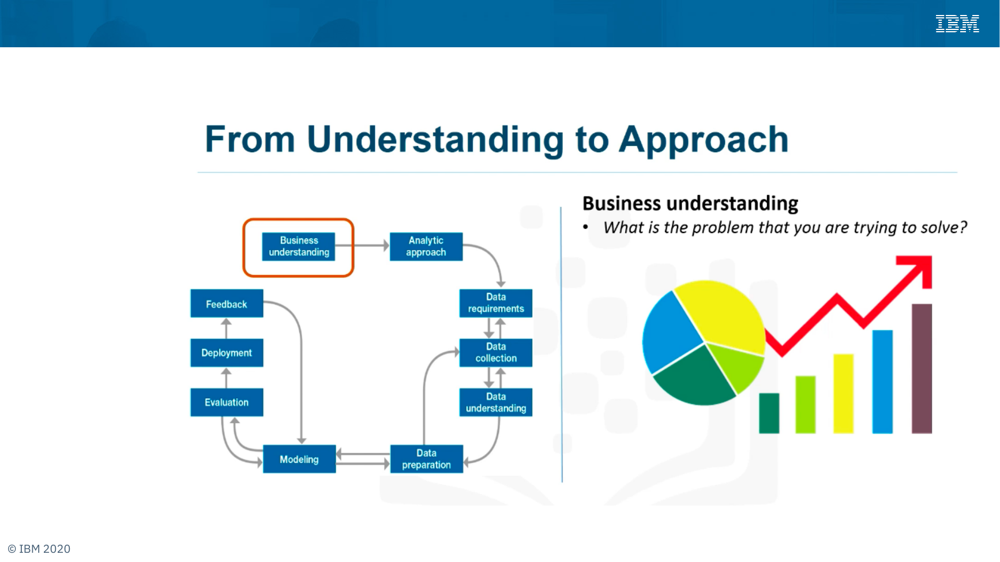
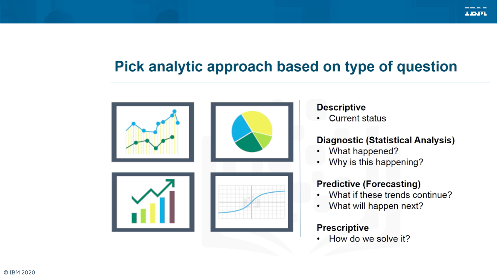
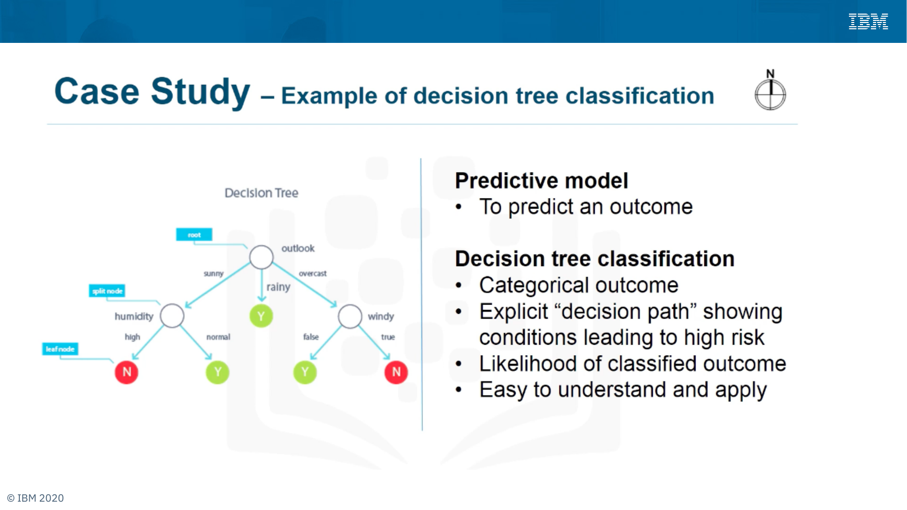
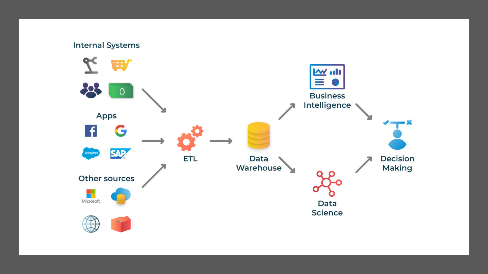
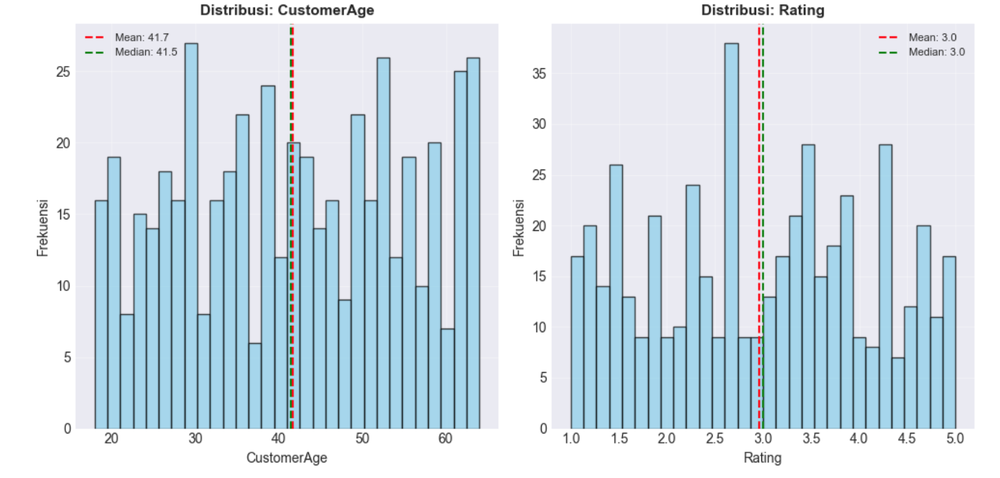
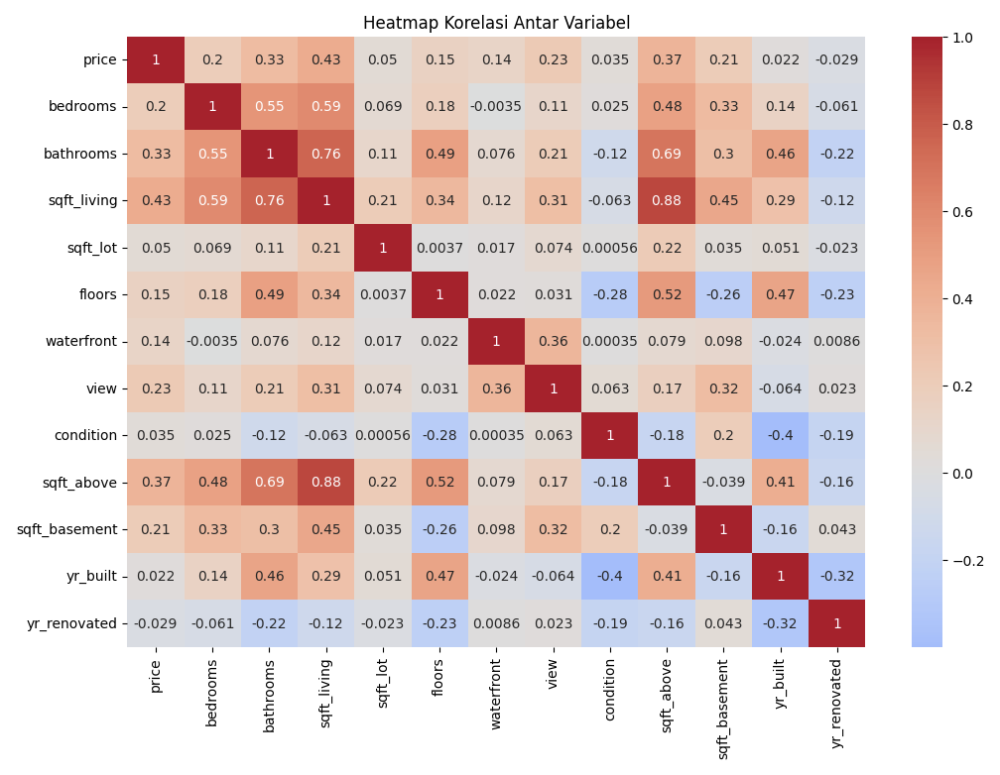
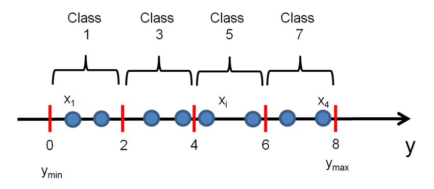
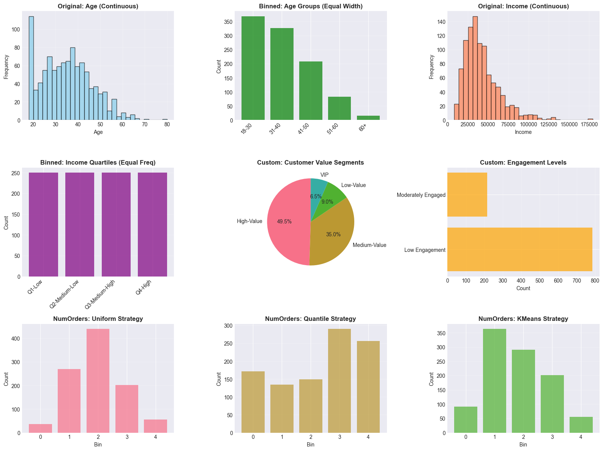
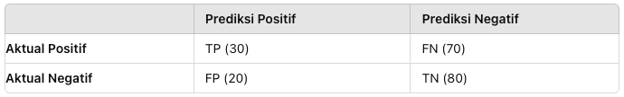
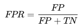

Delapan materi, satu alur: dari sejarah dan metodologi, menuju pengumpulan data, eksplorasi, pembersihan, rekayasa fitur, pemodelan, hingga evaluasi. Dijelaskan lengkap, dengan visualisasi yang bergerak mengikuti scroll.
Data science bukanlah ilmu yang lahir tiba-tiba. Ia adalah hasil pertemuan panjang antara statistika, ilmu komputer, dan kebutuhan nyata manusia untuk mengambil keputusan berbasis bukti. Memahami sejarahnya membuat kita tahu mengapa tools hari ini berbentuk seperti sekarang — dan ke arah mana bidang ini bergerak.
Data science adalah ilmu yang menggunakan data untuk mendapatkan wawasan (insight) dan membuat keputusan. Ia menggabungkan berbagai disiplin: statistik, matematika, dan ilmu komputer, lalu ditempelkan pada satu domain masalah (bisnis, kesehatan, pertanian, keuangan, dan seterusnya).
Perhatikan kata kuncinya: bukan sekadar "mengolah data", tetapi berakhir pada keputusan. Data yang menumpuk tanpa analisis hanyalah biaya penyimpanan.
Komputer mulai dipakai untuk analisis data. Bahasa Fortran lahir untuk komputasi ilmiah. Metode statistik tradisional mendominasi.
John W. Tukey menulis esai yang menggeser fokus statistik dari sekadar pengujian hipotesis menuju eksplorasi data.
Edgar F. Codd (1970) memperkenalkan model relasional. SQL lahir sebagai bahasa manipulasi data yang bertahan hingga kini.
PC mulai dipasarkan massal. Perangkat lunak statistik seperti SAS dan SPSS membuka analisis data bagi non-programmer.
Konsep data warehouse diperkenalkan, data mining dipakai mengekstrak pola, dan internet memicu ledakan volume data.
Istilah "Big Data" populer (volume, velocity, variety). Hadoop memungkinkan pemrosesan data besar secara terdistribusi. Data science menjadi profesi tersendiri.
TensorFlow, PyTorch, scikit-learn. Cloud (AWS, GCP, Azure) dan alat BI seperti Tableau & Power BI jadi standar.
Deep learning merambah visi komputer dan NLP. Edge computing & IoT menyatukan data science dengan perangkat fisik. Fokus bergeser ke privasi.
"Big Data" menggambarkan data yang terlalu besar/cepat/bervariasi untuk ditangani alat lama. Hadoop menjawabnya dengan memecah pekerjaan ke banyak mesin (MapReduce + HDFS). Di titik ini data science menjadi disiplin yang terpisah, dan permintaan terhadap data scientist melonjak.
Machine learning dan AI masuk ke aplikasi sehari-hari. Pustaka seperti TensorFlow, PyTorch, dan scikit-learn membuat model kompleks bisa dibangun dalam hitungan baris. Cloud menyediakan komputasi elastis; Tableau dan Power BI membuat hasil analisis bisa dibaca siapa pun.
Deep learning mendominasi visi komputer dan NLP. Edge computing dan IoT memindahkan inferensi ke dekat sumber data. Isu etika, privasi, dan keamanan data naik ke permukaan — melahirkan regulasi seperti GDPR di Eropa dan UU Perlindungan Data Pribadi (UU PDP) di Indonesia.
| Periode | Fokus | Alat / Teknologi | Keterampilan Kunci |
|---|---|---|---|
| 1960-an | Komputasi statistik | Fortran, mainframe | Metode statistik klasik |
| 1970-an | Penyimpanan terstruktur | DBMS relasional, SQL | Perancangan basis data |
| 1980-an | Analisis di meja kerja | PC, SAS, SPSS | Interpretasi output statistik |
| 1990-an | Integrasi & penambangan | Data warehouse, OLAP, data mining | SQL lanjutan, pemodelan data |
| 2000-an | Skala besar | Hadoop, MapReduce, NoSQL | Pemrograman terdistribusi |
| 2010-an | Prediksi & otomasi | scikit-learn, TensorFlow, PyTorch, cloud, BI | Machine learning, storytelling data |
| 2020-an | AI terapan & tata kelola | LLM, MLOps, edge/IoT, AutoML | Evaluasi model, etika & privasi |
Semakin banyak keputusan diambil oleh model, semakin besar pula risiko yang menyertainya: bias data, diskriminasi algoritmik, kebocoran data pribadi.
Materi ini diadaptasi dari kursus IBM (© IBM 2020) yang disusun dari pengalaman John Rollins, seorang senior data scientist di IBM. Tujuannya satu: memastikan data yang dipakai untuk memecahkan masalah relevan dan dimanipulasi dengan benar agar pertanyaan yang diajukan benar-benar terjawab.

Metodologi dimulai dengan meluangkan waktu untuk mencari klarifikasi. Klarifikasi diletakkan di awal karena hanya dengan kejelasan masalah kita bisa menentukan data mana yang akan dipakai untuk menjawab pertanyaan inti.
Urutannya: pahami goal orang yang bertanya → turunkan menjadi objectives → pecah objectives menjadi prioritas yang bisa direncanakan. Contoh materi: "bagaimana mengurangi biaya aktivitas?" Goal-nya bisa berarti efisiensi, bisa juga profitabilitas — dua hal berbeda dengan solusi berbeda.
Setelah pertanyaan dipahami dengan kuat, pilih pendekatan analitiknya. Intinya: jenis pola apa yang dibutuhkan untuk menjawab pertanyaan itu seefektif mungkin.
Pendekatan yang benar selalu bergantung pada kebutuhan bisnis model, bukan pada algoritma yang paling sedang populer.
| Pendekatan | Pertanyaan yang Dijawab | Contoh Keluaran | Teknik Umum |
|---|---|---|---|
| Descriptive | Apa status saat ini? | Ringkasan penjualan bulan ini | Statistik deskriptif, dashboard, agregasi |
| Diagnostic (Statistical Analysis) | Apa yang terjadi & mengapa? | Penyebab penurunan konversi | Uji hipotesis, analisis korelasi, drill-down |
| Predictive (Forecasting) | Jika tren berlanjut, apa yang akan terjadi? | Perkiraan permintaan kuartal depan | Regresi, klasifikasi, time series |
| Prescriptive | Bagaimana kita menyelesaikannya? | Rekomendasi alokasi stok | Optimasi, simulasi, sistem rekomendasi |
Urutan ini juga mencerminkan tingkat kesulitan: descriptive paling mudah, prescriptive paling menuntut karena harus memahami sebab-akibat dan konsekuensi keputusan.

Pada kasus readmission pasien, model klasifikasi decision tree dipakai untuk menemukan kombinasi kondisi yang mengarah pada tiap luaran pasien. Dengan menelusuri variabel di setiap node sepanjang jalur menuju leaf, diperoleh nilai ambang (threshold) tertentu.

Menentukan data apa yang dibutuhkan: variabel, granularitas, periode, dan kualitas minimum agar pertanyaan bisa dijawab.
Mengambil data dari sumbernya — basis data, API, berkas, sensor, survei — dengan izin dan metode yang tepat.
Melihat isi data yang terkumpul: apakah sesuai harapan? Apakah ada nilai hilang, duplikat, atau anomali?
Membersihkan, mentransformasi, dan menyusun data menjadi bentuk yang siap dimodelkan (sering disebut feature engineering).
Memilih dan melatih algoritma. Di sinilah iterasi dengan data preparation paling sering terjadi.
Mengukur kinerja pada data yang belum pernah dilihat model, dengan metrik yang sesuai tujuan bisnis.
Menempatkan model di lingkungan nyata agar memberi nilai — sebagai API, batch scoring, atau fitur produk.
Memantau performa setelah dipakai. Data berubah, model menua; umpan balik mengarahkan perbaikan berikutnya.
Mengumpulkan data adalah langkah awal yang menentukan kualitas seluruh proyek. Data yang dikumpulkan harus relevan, akurat, dan representatif terhadap masalah yang ingin diselesaikan. Salah di tahap ini, semua tahap berikutnya ikut salah — garbage in, garbage out.
Data yang dikumpulkan dan disimpan sendiri oleh organisasi. Sangat spesifik dan relevan dengan operasi.
Data dari luar organisasi; melengkapi data internal dan memberi perspektif lebih luas.
Sumber yang tidak selalu masuk dua kategori di atas, tetapi sering paling kaya.

Tentukan apa yang ingin dicapai dan pertanyaan kunci yang harus dijawab, lalu jenis data yang diperlukan.
Kuantitatif: angka (luas rumah, harga). Kualitatif: deskriptif/kategori (jenis properti, lokasi).
Petakan sumber internal, eksternal, dan lainnya. Nilai ketersediaan, biaya akses, dan reliabilitasnya.
Dapatkan izin akses, lalu ekstrak: query SQL, panggilan API (HTTP), atau web scraping (BeautifulSoup/Scrapy).
Periksa nilai hilang, duplikat, format tidak konsisten, dan nilai di luar rentang wajar sebelum data dipakai.
Semua contoh berikut memakai pandas. Perhatikan bahwa polanya selalu sama: ambil → muat ke DataFrame → periksa.
# Membuat sample data CSV sample_data = { 'ID': [1, 2, 3, 4, 5], 'Nama': ['Budi Santoso', 'Ani Wijaya', 'Citra Dewi', 'Doni Pratama', 'Eka Putri'], 'Usia': [25, 30, 28, 35, 22], 'Kota': ['Jakarta', 'Bandung', 'Surabaya', 'Jakarta', 'Medan'], 'Gaji': [5000000, 7000000, 6500000, 8000000, 4500000] } df_sample = pd.DataFrame(sample_data) df_sample.to_csv('data_karyawan.csv', index=False) # Membaca data dari CSV df_karyawan = pd.read_csv('data_karyawan.csv') print(df_karyawan) print(f"Jumlah baris: {len(df_karyawan)}") print(f"Jumlah kolom: {len(df_karyawan.columns)}")
# Excel dengan multiple sheets data_q1 = { 'Produk': ['Laptop', 'Mouse', 'Keyboard', 'Monitor'], 'Penjualan': [120, 450, 380, 95], 'Revenue': [180000000, 13500000, 19000000, 47500000] } data_q2 = { 'Produk': ['Laptop', 'Mouse', 'Keyboard', 'Monitor'], 'Penjualan': [135, 480, 410, 105], 'Revenue': [202500000, 14400000, 20500000, 52500000] } with pd.ExcelWriter('data_penjualan.xlsx', engine='openpyxl') as writer: pd.DataFrame(data_q1).to_excel(writer, sheet_name='Q1', index=False) pd.DataFrame(data_q2).to_excel(writer, sheet_name='Q2', index=False) # Membaca semua sheet sekaligus all_sheets = pd.read_excel('data_penjualan.xlsx', sheet_name=None) print(f"Sheet tersedia: {list(all_sheets.keys())}")
data_json = {
"metadata": {"date": "2025-11-11", "version": "1.0"},
"customers": [
{"id": 1, "transactions": [
{"date": "2025-01-15", "amount": 15000000},
{"date": "2025-02-20", "amount": 22000000}]},
{"id": 2, "transactions": [
{"date": "2025-01-10", "amount": 8500000},
{"date": "2025-03-05", "amount": 12000000}]}
]
}
with open('data_customers.json', 'w') as f:
json.dump(data_json, f, indent=4)
# Baca kembali + ratakan struktur bersarang
with open('data_customers.json') as f:
loaded = json.load(f)
df_customers = pd.json_normalize(loaded['customers'])
try: url = 'https://jsonplaceholder.typicode.com/users' response = requests.get(url, timeout=10) if response.status_code == 200: users = response.json() df_users = pd.DataFrame(users) print("Data berhasil diambil dari API") print(df_users[['id', 'name', 'email', 'phone']].head()) else: print(f"Error: status {response.status_code}") except Exception as e: print(f"Error saat mengambil data: {e}") print("Pastikan koneksi internet tersedia")
# Data sintetis untuk latihan / pengujian pipeline np.random.seed(42) n = 1000 synthetic = { 'TransactionID': range(1, n + 1), 'CustomerID': np.random.randint(1000, 5000, n), 'ProductCategory': np.random.choice( ['Electronics', 'Fashion', 'Food', 'Books', 'Sports'], n), 'Amount': np.random.randint(50000, 5000000, n), 'PaymentMethod': np.random.choice( ['Credit Card', 'Debit Card', 'E-Wallet', 'Transfer'], n), 'Rating': np.random.uniform(1, 5, n).round(1), 'Date': pd.date_range(start='2024-01-01', periods=n, freq='h') } df_synthetic = pd.DataFrame(synthetic) print(df_synthetic.head(10))
EDA adalah proses awal dalam analisis data untuk memahami struktur, karakteristik, dan pola dalam dataset. Ini langkah penting sebelum analisis lanjut atau pembangunan model — lewat EDA kita mengidentifikasi distribusi, outlier, korelasi, dan anomali.
| Aspek | EDA | Preprocessing |
|---|---|---|
| Tujuan | Memahami & menemukan pola | Menyiapkan data agar siap model |
| Sifat | Eksploratif, terbuka | Transformatif, terarah |
| Keluaran | Hipotesis, insight, daftar masalah data | Dataset bersih & ter-transformasi |
| Contoh aksi | Histogram, korelasi, ringkasan statistik | Imputasi, encoding, scaling |
Hubungannya bukan "salah satu", melainkan berurutan: EDA memberi tahu apa yang perlu diperbaiki, preprocessing mengerjakannya.
Mean — jumlah semua nilai dibagi jumlah data.
Median — nilai tengah setelah data diurutkan; tahan terhadap outlier.
Modus — nilai yang paling sering muncul; bisa unimodal, bimodal, atau multimodal.
Range = maks − min. Paling sederhana, tetapi sangat dipengaruhi satu nilai ekstrem.
Standar deviasi punya satuan sama dengan data asli, jadi lebih mudah ditafsirkan daripada variansi (yang satuannya kuadrat).
IQR = Q3 − Q1, rentang tengah 50% data; dasar deteksi outlier.
Skewness mengukur asimetri distribusi:
Kurtosis mengukur "ketebalan ekor" — seberapa sering nilai ekstrem muncul.
| Situasi | Pusat | Sebaran |
|---|---|---|
| Data simetris, tanpa outlier | Mean | Std. deviasi |
| Miring / ada outlier | Median | IQR |
| Data kategorikal | Modus | — |
Ini bukan aturan kaku, tetapi default yang aman. Selalu laporkan lebih dari satu ukuran ketika data tidak jelas bentuknya.
Visualisasi membantu memahami distribusi, pola, dan hubungan melalui representasi grafis. Pilih bentuk sesuai pertanyaan: bagaimana sebarannya? → histogram; bagaimana hubungan dua variabel? → scatter; di mana outlier? → box plot.
Bar plot menampilkan data kategorikal: setiap batang satu kategori, dan tinggi/panjang batang menunjukkan ukuran atau frekuensinya. Cocok untuk membandingkan jumlah transaksi per kota, jumlah pelanggan per segmen, dan sejenisnya.
| Visualisasi | Jawab Pertanyaan |
|---|---|
| Histogram | Bagaimana distribusi satu variabel numerik? |
| Scatter plot | Bagaimana hubungan dua variabel numerik? |
| Box plot | Di mana median, sebaran, dan outlier? |
| Bar plot | Bagaimana perbandingan antar kategori? |
| Heatmap | Bagaimana pola korelasi banyak variabel sekaligus? |

Korelasi mengukur hubungan linier antara dua variabel, bernilai antara −1 dan 1: positif (naik bersama), negatif (berlawanan), nol (tidak ada hubungan linier).

Z-score mengukur seberapa jauh sebuah titik data menyimpang dari rata-rata, dalam satuan standar deviasi. Nilai |z| > 3 umum dipakai sebagai penanda outlier.
from scipy import stats zscore_info = [] for col in numeric_cols_sample: if col in df.columns: z = np.abs(stats.zscore(df[col].dropna())) n_out = len(z[z > 3]) zscore_info.append({ 'Kolom': col, 'Jumlah Outliers (Z>3)': n_out, 'Persentase (%)': f("{n_out / len(df) * 100:.2f}") }) print(pd.DataFrame(zscore_info).to_string(index=False))
| Metode | Aturan | Cocok Untuk |
|---|---|---|
| Z-score | |z| > 3 | Data mendekati normal |
| IQR | < Q1−1.5·IQR atau > Q3+1.5·IQR | Data miring / robust |
Validasi data adalah proses memastikan data yang dipakai dalam analisis atau model memenuhi kriteria kualitas: akurat, konsisten, dan lengkap. Tanpa validasi, model bisa dilatih di atas data yang tampak rapi tetapi secara diam-diam salah.
Nilai sesuai aturan/constraint: tipe data, rentang, wajib isi, unik, keanggotaan himpunan, foreign key, pola regex, dan validasi lintas kolom.
Kedekatan nilai dengan kenyataan. Paling sulit diperbaiki karena butuh sumber "gold standard" eksternal.
Semua ukuran yang wajib diketahui benar-benar terisi. Ketiadaan data tidak bisa "ditebak" tanpa asumsi.
Tidak ada dua nilai yang saling bertentangan, dan satuan/format seragam di semua sistem (kg vs pound, DD-MM vs MM-DD).
| CustomerID | Phone | Age | BirthDate | Salary | Membership | |
|---|---|---|---|---|---|---|
| 1 | budi@email.com | 081234567890 | 25 | 1998-01-15 | 5000000 | Gold |
| 2 | ani.wijaya@email.com | 08223456789 | -5 | 2030-05-20 | 3000000 | Silver |
| 3 | invalid-email | 08123 | 150 | 1873-03-10 | -1000000 | Platinum |
| 4 | doni@email.com | 081345678901234 | 30 | 1993-06-05 | 8000000 | Bronze |
| 10 | (kosong) | 081234567890 | 25 | 1998-07-10 | 5500000 | Silver |
| 10 | irma@email.com | 081234567890 | 25 | 1998-07-10 | 5500000 | Silver |
| 12 | kiki@email.com | 081234567890 | "tiga puluh" | invalid-date | 10000000 | VIP |
Merah = melanggar aturan validasi · abu-abu = nilai hilang · CustomerID 10 muncul dua kali (duplikasi kunci) · Membership berisi nilai di luar himpunan sah (Gold, Silver, Platinum, Bronze).
import re def validate_email(email): """Validasi format email menggunakan regex""" if pd.isna(email) or email == '': return False pattern = r'^[a-zA-Z0-9._%+-]+@[a-zA-Z0-9.-]+\.[a-zA-Z]{2,}$' return bool(re.match(pattern, str(email))) df_customers['Email_Valid'] = df_customers['Email'].apply(validate_email) invalid = df_customers[~df_customers['Email_Valid']] if len(invalid) > 0: print(f"Ditemukan {len(invalid)} email tidak valid") print(invalid[['CustomerID', 'Name', 'Email']])
# Konversi BirthDate, lalu hitung usia dari tanggal df_customers['BirthDate_dt'] = pd.to_datetime( df_customers['BirthDate'], errors='coerce') current_year = datetime.now().year df_customers['CalculatedAge'] = ( current_year - df_customers['BirthDate_dt'].dt.year) df_customers['Age_numeric'] = pd.to_numeric( df_customers['Age'], errors='coerce') # Toleransi 1 tahun untuk pembulatan df_customers['Age_Consistent'] = ( abs(df_customers['Age_numeric'] - df_customers['CalculatedAge']) <= 1) inconsistent = df_customers[ (~df_customers['Age_Consistent']) & (df_customers['Age_numeric'].notna()) & (df_customers['CalculatedAge'].notna())]
| Data | Pola / Aturan | Contoh Gagal |
|---|---|---|
| ^[a-zA-Z0-9._%+-]+@[a-zA-Z0-9.-]+\.[a-zA-Z]{2,}$ | fajar@ | |
| No. HP Indonesia | ^08\d{8,11}$ | 08123 |
| Rentang tanggal | df[df['date'] > datetime.now()] | tanggal lahir 2030 |
| Rentang numerik | 0 <= age <= 120 | usia −5 / 150 |
| Himpunan nilai | isin(['Gold','Silver',...]) | VIP, Diamond |
Validasi bukan hanya soal isi sel. Model juga harus divalidasi pada data yang belum pernah dilihatnya — jika tidak, kita hanya mengukur kemampuan menghafal.
Sebelum menyentuh algoritma, kita harus tahu apa yang sedang kita analisis. Objek data adalah unit dasar yang menjadi fokus analisis; salah mengenalinya, seluruh proses berikutnya jadi kabur. Setelah itu, data mentah hampir selalu kotor — dan pembersihan adalah harga yang harus dibayar untuk hasil yang bisa dipercaya.
Objek data adalah entitas atau item yang diamati, diukur, atau diprediksi dalam dataset — unit dasar yang menjadi fokus analisis atau model prediksi. Setiap objek biasanya punya beberapa fitur/atribut yang menggambarkan karakteristiknya.
Contoh: dalam dataset perumahan, objek datanya adalah "rumah". Setiap baris mewakili satu rumah; kolom berisi fitur seperti harga, luas bangunan, jumlah kamar tidur.
| rumah_id | harga | luas | kamar | kota |
|---|---|---|---|---|
| R-001 | 850 jt | 120 m² | 3 | Bandung |
| R-002 | 1.250 jt | 180 m² | 4 | Jakarta |
| R-003 | 620 jt | 90 m² | 2 | Medan |
Tentukan unit analisisnya: rumah, pelanggan, transaksi, pasien, atau dokumen?
Daftar karakteristik yang relevan dan benar-benar tersedia di data.
Numerik, kategorikal, teks, atau waktu — tipe menentukan cara analisis.
Statistik deskriptif + grafik untuk melihat pola, tren, dan hubungan antar fitur.
| Tipe | Contoh | Perlakuan |
|---|---|---|
| Numerik | price, sqft_living | Scaling, binning, statistik |
| Kategorikal | city, neighborhood | Encoding (label / one-hot) |
| Teks | deskripsi properti | Tokenisasi, TF-IDF, embedding |
| Waktu | tanggal transaksi | Ekstraksi komponen, lag, recency |
# Dataset customer churn untuk klasifikasi np.random.seed(42) n = 1000 data = { 'CustomerID': range(1, n + 1), 'Age': np.random.randint(18, 70, n), 'Gender': np.random.choice(['Male', 'Female'], n), 'Tenure_Months': np.random.randint(1, 72, n), 'MonthlyCharges': np.random.uniform(20, 120, n).round(2), 'TotalCharges': np.random.uniform(100, 8000, n).round(2), 'Contract': np.random.choice( ['Month-to-month', 'One year', 'Two year'], n, p=[0.5, 0.3, 0.2]), 'PaymentMethod': np.random.choice( ['Electronic check', 'Mailed check', 'Bank transfer', 'Credit card'], n), 'InternetService': np.random.choice( ['DSL', 'Fiber optic', 'No'], n, p=[0.4, 0.4, 0.2]), 'NumProducts': np.random.randint(1, 6, n), 'NumCalls': np.random.randint(0, 10, n), 'ComplaintResolved': np.random.choice([0, 1], n, p=[0.3, 0.7]), } df = pd.DataFrame(data) # Target: churn lebih tinggi untuk kontrak bulanan, # tagihan besar, masa berlangganan pendek, komplain tak selesai churn_prob = ( (df['Contract'] == 'Month-to-month').astype(int) * 0.30 + (df['MonthlyCharges'] > 80).astype(int) * 0.20 + (df['Tenure_Months'] < 12).astype(int) * 0.25 + (df['ComplaintResolved'] == 0).astype(int) * 0.15 + np.random.uniform(0, 0.1, n) ) df['Churn'] = (churn_prob > 0.5).astype(int)
Pembersihan data adalah proses sistematis untuk mengidentifikasi dan memperbaiki data yang tidak valid atau tidak akurat: mengisi nilai hilang, menghapus duplikasi, memperbaiki inkonsistensi, dan menangani outlier.
Isi dengan mean/median/mode, hapus baris/kolom, atau imputasi lanjutan (KNN, regresi).
duplicated() untuk mendeteksi, drop_duplicates() untuk menghapus.
Samakan format tanggal, satuan, dan penulisan kategori ("NYC" vs "New York City").
Deteksi dengan IQR/z-score, lalu hapus, batasi (winsorize), atau biarkan bila bermakna.
# Mean imputation untuk numerik simetris age_mean = df_simple['Age'].mean() df_simple['Age'] = df_simple['Age'].fillna(age_mean) # Median untuk data miring (income) income_median = df_simple['Income'].median() df_simple['Income'] = df_simple['Income'].fillna(income_median) # Mode untuk kategorikal for col in ['ProductCategory', 'MembershipLevel', 'City']: if df_simple[col].isnull().any(): mode_val = df_simple[col].mode()[0] df_simple[col] = df_simple[col].fillna(mode_val) print(f"{col} diisi dengan: {mode_val}")
# 1. Deteksi & hapus duplikat print("Duplikat:", df.duplicated().sum()) df = df.drop_duplicates() # 2. Samakan format tanggal df['tanggal'] = pd.to_datetime( df['tanggal'], errors='coerce') # 3. Normalisasi kategori df['kota'] = (df['kota'] .str.strip() .str.title() .replace({'Nyc': 'New York City'})) # 4. Periksa tipe data akhir print(df.dtypes) print(df.isnull().sum())
Kualitas data yang buruk menghasilkan kesimpulan yang tidak akurat atau menyesatkan. Model yang dilatih pada data kotor akan "belajar" kesalahan tersebut, lalu mereproduksinya pada data baru — dengan keyakinan yang menipu.
Pembersihan bukan tujuan, melainkan sarana. Berhenti ketika data sudah cukup baik untuk menjawab pertanyaan — bukan ketika data "sempurna". Terlalu agresif membuang data bisa menghilangkan sinyal yang justru penting.
Catat setiap keputusan: berapa baris dihapus, metode imputasi apa yang dipakai, dan mengapa. Tanpa catatan, analisis tidak bisa direproduksi — dan sulit dipertahankan ketika ditanya "angka ini dari mana?".
Mengkonstruksi data adalah proses memodifikasi dan menyiapkan data mentah agar lebih siap dipakai untuk analisis atau pemodelan — melalui transformasi data, rekayasa fitur, dan agregasi.
Mengubah data dari satu format/skala ke format lain: normalisasi agar skala seragam, atau transformasi logaritmik untuk mengurangi kemiringan.
Menciptakan fitur baru dari data yang ada — menggabungkan fitur, membuat fitur derivatif, atau mengurangi jumlah fitur dengan teknik seperti PCA.
Mengelompokkan dan merangkum: rata-rata harga rumah per kota, jumlah transaksi per bulan — untuk melihat tren yang lebih besar.
Fitur yang relevan menambah informasi yang tidak ada pada fitur asli. Contoh: menambahkan price_per_sqft memberi model informasi yang tidak diperoleh dari harga atau luas secara terpisah. Normalisasi/standardisasi juga membuat model bekerja lebih efisien.
Transformasi menyelaraskan format sehingga analisis konsisten. Contoh: menyeragamkan format tanggal, lalu membuat sales_quarter untuk melihat pola musiman. Rekayasa fitur juga mengurangi noise.
Reduksi dimensionalitas (PCA, pemilihan fitur) memangkas jumlah fitur tanpa kehilangan informasi penting, sehingga komputasi lebih ringan dan model lebih mudah dipahami. Agregasi juga menyederhanakan dataset.
Keduanya menyamakan skala, tetapi tujuannya berbeda. Pilih berdasarkan algoritma dan bentuk distribusi.
Mengubah data ke rentang seragam, biasanya 0 sampai 1.
Kapan: ketika skala variabel berbeda jauh dan semua fitur harus berkontribusi merata. Cocok untuk KNN dan neural network.
Mengubah data agar memiliki mean 0 dan standar deviasi 1.
Kapan: data berdistribusi normal atau hampir normal, dan algoritma butuh data terpusat di sekitar rata-rata. Cocok untuk SVM, regresi, PCA.
| Produk | Harga (Rp) | Terjual | Harga Norm. | Terjual Norm. |
|---|---|---|---|---|
| A | 10 | 100 | 0.00 | 0.00 |
| B | 30 | 300 | 0.40 | 0.40 |
| C | 60 | 600 | 1.00 | 1.00 |
Contoh materi: A = (10−10)/(60−10) = 0.00; B = (30−10)/50 = 0.40; C = 1.00.
| Mahasiswa | Nilai | Mean kelas | Std. dev | Z-score |
|---|---|---|---|---|
| A | 60 | 75 | 10 | −1.5 |
| B | 75 | 75 | 10 | 0.0 |
| C | 90 | 75 | 10 | 1.5 |
(60−75)/10 = −1.5 artinya nilai A berada 1,5 standar deviasi di bawah rata-rata kelas.
from sklearn.preprocessing import MinMaxScaler df = pd.DataFrame({ "Produk": ["A", "B", "C"], "Harga (Rp)": [10, 30, 60], "Jumlah Terjual": [100, 300, 600] }) scaler = MinMaxScaler() kolom = ["Harga (Rp)", "Jumlah Terjual"] hasil = scaler.fit_transform(df[kolom]) df["Harga Normalisasi"] = hasil[:, 0] df["Jumlah Normalisasi"] = hasil[:, 1] print(df.to_string(index=False))
from sklearn.preprocessing import StandardScaler df = pd.DataFrame({ "Mahasiswa": ["A", "B", "C"], "Nilai": [60, 75, 90] }) rata_rata = df["Nilai"].mean() std_dev = df["Nilai"].std(ddof=0) scaler = StandardScaler() df["Z-Score"] = scaler.fit_transform(df[["Nilai"]]) df["Rata-rata kelas"] = rata_rata df["Std. deviasi"] = std_dev print(df.round(2))
Data transaksi sering right-skewed: mayoritas nilai kecil, sedikit nilai sangat besar. Logaritma memperkecil jarak antar nilai besar sehingga distribusi lebih simetris.
| Produk | Transaksi | log10(x) |
|---|---|---|
| A | 10 | 1.000 |
| B | 100 | 2.000 |
| C | 1.000 | 3.000 |
| D | 10.000 | 4.000 |
Setiap kenaikan 10× hanya menambah 1 pada skala log — inilah inti "kompresi"-nya.
df = pd.DataFrame({ "Produk": ["A", "B", "C", "D"], "Transaksi asli": [10, 100, 1000, 10000] }) df["log10(x)"] = np.log10(df["Transaksi asli"]) print(df.to_string(index=False)) # Jika ada nilai 0, gunakan log1p # df["log"] = np.log1p(df["Transaksi asli"])
Algoritma bekerja dengan angka, bukan teks. Encoding adalah jembatan — tetapi pilihan metodenya membawa konsekuensi makna.
Setiap kategori diubah menjadi bilangan bulat unik. Cocok untuk data ordinal — kategori yang punya urutan bermakna.
Contoh: ['low','medium','high'] → [0,1,2].
Setiap kategori menjadi kolom biner (0/1). Cocok untuk data nominal — tidak ada urutan antar kategori.
Contoh: ['red','blue','green'] → tiga kolom: red, blue, green.
| Pelanggan | Kategori | Label | One-hot: Reguler | One-hot: Silver | One-hot: Gold |
|---|---|---|---|---|---|
| P1 | Reguler | 0 | 1 | 0 | 0 |
| P2 | Silver | 1 | 0 | 1 | 0 |
| P3 | Gold | 2 | 0 | 0 | 1 |
from sklearn.preprocessing import LabelEncoder le = LabelEncoder() categories = ['low', 'medium', 'high'] encoded = le.fit_transform(categories) print("Original :", categories) print("Encoded :", encoded) # [0 1 2] — urutan terjaga
from sklearn.preprocessing import OneHotEncoder enc = OneHotEncoder(sparse_output=False) encoded = enc.fit_transform(df[['City']]) print(enc.get_feature_names_out()) print(encoded) # Alternatif ringkas di pandas: # df = pd.get_dummies(df, columns=['City'], dtype=int)
Ini bagian paling kreatif: mengambil data yang sudah ada lalu mengubah atau menambahkan sesuatu agar lebih berguna bagi model.
Fitur baru dari kombinasi dua atau lebih fitur. Contoh: jarak_tempuh_maks dari kecepatan_maks × efisiensi_bahan_bakar.
Transformasi matematis sederhana: logaritmik, eksponensial, kuadrat. Contoh: log_penjualan dari penjualan yang rentangnya sangat lebar.
Merangkum banyak baris menjadi satu baris per objek: total belanja, frekuensi transaksi, tanggal terakhir bertransaksi.
| Customer | Harga | Qty | Tanggal |
|---|---|---|---|
| C01 | 100.000 | 2 | 2026-09-28 |
| C01 | 50.000 | 1 | 2026-09-20 |
| C02 | 50.000 | 4 | 2026-09-15 |
| C03 | 25.000 | 1 | 2026-08-01 |
| Customer | Total Spend | Frequency | Recency (hari) |
|---|---|---|---|
| C01 | 250.000 | 2 | 2 |
| C02 | 200.000 | 1 | 15 |
| C03 | 25.000 | 1 | 60 |
df = pd.DataFrame({ "Customer": ["C01", "C01", "C02", "C03"], "Harga": [100000, 50000, 50000, 25000], "Qty": [2, 1, 4, 1], "Tanggal": ["2026-09-28", "2026-09-20", "2026-09-15", "2026-08-01"] }) df["Tanggal"] = pd.to_datetime(df["Tanggal"]) df["Total_Transaksi"] = df["Harga"] * df["Qty"] acuan = pd.Timestamp("2026-09-30") fitur = df.groupby("Customer").agg( Total_Spend=("Total_Transaksi", "sum"), Frequency=("Tanggal", "count"), Last_Transaction=("Tanggal", "max") ) fitur["Recency"] = (acuan - fitur["Last_Transaction"]).dt.days print(fitur.drop(columns="Last_Transaction"))
df = pd.DataFrame({ "harga": [100000, 50000, 25000], "quantity": [2, 4, 1], "kategori": ["Elektronik", "Pakaian", "Elektronik"], "tanggal": pd.to_datetime(["2026-09-28", "2026-09-15", "2026-08-01"]) }) # 1. Nilai transaksi df["total_spend"] = df["harga"] * df["quantity"] # 2. Ekstraksi nama hari df["hari"] = df["tanggal"].dt.day_name() # 3. Indikator akhir pekan (Sabtu/Minggu = 1) df["weekend_flag"] = (df["tanggal"].dt.dayofweek >= 5).astype(int) # 4. Kategori produk → kolom biner df = pd.get_dummies(df, columns=["kategori"], dtype=int) print(df)
Binning mengelompokkan nilai numerik menjadi beberapa kategori (bin). Manfaatnya: lebih stabil terhadap noise/outlier, lebih mudah diinterpretasi, cocok untuk algoritma yang menyukai data kategorikal (Naïve Bayes, decision tree), dan memudahkan visualisasi.
Rentang nilai dibagi menjadi interval dengan lebar sama.
| Interval | Kategori |
|---|---|
| 40 – 56.67 | Rendah |
| 56.67 – 73.33 | Sedang |
| 73.33 – 90 | Tinggi |
Kelemahan: jika data menumpuk di satu rentang, sebagian bin bisa hampir kosong.
Data dibagi sehingga jumlah observasi tiap kelompok kurang lebih sama.
Dengan 10 mahasiswa dan 3 kelompok, tiap kelompok berisi sekitar 3–4 mahasiswa — terlepas dari lebar intervalnya.
nilai = [40, 45, 50, 60, 65, 70, 75, 80, 85, 90] df = pd.DataFrame({"Nilai": nilai}) # Equal width: bagi rentang jadi 3 bin df["Kategori"] = pd.cut( df["Nilai"], bins=3, labels=["Rendah", "Sedang", "Tinggi"] ) print(df)
nilai = [40, 45, 50, 60, 65, 70, 75, 80, 85, 90] df = pd.DataFrame({"Nilai": nilai}) # Equal frequency: 3 kelompok berisi sama banyak df["Kategori"] = pd.qcut( df["Nilai"], q=3, labels=["Rendah", "Sedang", "Tinggi"] ) print(df.to_string(index=False)) print(df["Kategori"].value_counts().sort_index())
Unsupervised tidak melihat kolom target sama sekali; ia hanya melihat distribusi nilai di kolom itu sendiri. Contoh: equal-width dan equal-frequency.
Supervised melihat fitur target, sehingga batas bin dipilih agar paling membantu model membedakan kelas. Contoh: entropy-based discretization (information gain pada decision tree).


Tidak semua fitur membantu. Beberapa redundan, beberapa hanya menambah noise, dan sebagian membuat model lambat serta sulit dijelaskan.
Menilai fitur secara mandiri tanpa model: korelasi dengan target, chi-square, mutual information, varians mendekati nol.
Cepat, tetapi mengabaikan interaksi antar fitur.
Mencoba kombinasi fitur dan menilai lewat model: forward selection, backward elimination, recursive feature elimination (RFE).
Akurat, tetapi komputasi mahal.
Seleksi terjadi saat model dilatih: regularisasi Lasso (L1) yang memaksa koefisien nol, atau feature importance pada pohon keputusan.
Kompromi yang paling sering dipakai praktisi.
Principal Component Analysis mengubah fitur asli menjadi komponen baru yang saling tidak berkorelasi, diurutkan berdasarkan variansi yang dijelaskan. Dengan mengambil beberapa komponen pertama, dimensi turun drastis sementara sebagian besar informasi tetap terjaga.
Anda seorang data scientist di perusahaan e-commerce. Dataset mentah transaksi berisi: Transaction_ID, Customer_ID, Transaction_Date, Product_Category, Item_Price, Quantity, Customer_Address. Tujuannya membangun model churn/retention prediction.
Buat fitur prediktif seperti Total_Spend = Item_Price × Quantity, jumlah transaksi, rata-rata nilai transaksi, dan jumlah kategori produk berbeda.
Ekstrak hari, bulan, kuartal, dan weekend flag; hitung recency dari transaksi terakhir. Pola waktu sering menjadi sinyal kuat kebiasaan belanja.
Alamat terlalu unik untuk dipakai langsung. Ekstrak kota dan kode pos, atau turunkan jarak ke pusat distribusi sebagai fitur numerik.
Model adalah representasi matematis atau algoritmik dari proses belajar berdasarkan data, dipakai untuk membuat prediksi atau keputusan. Ia dibangun dengan menganalisis pola pada data latih, lalu dipakai pada data baru yang belum pernah dilihat.
Dalam supervised learning, label adalah target — hasil yang ingin diprediksi. Fitur adalah variabel independen, label adalah variabel dependen.
Dua nilai: 0/1, Ya/Tidak, True/False.
Contoh: apakah email ini spam?
Logistic RegressionLebih dari dua kategori yang saling eksklusif.
Contoh: kucing, anjing, burung.
Random ForestNilai numerik kontinu, tak terbatas pada kategori.
Contoh: harga rumah.
Linear RegressionContoh dataset perumahan: luas_rumah, jumlah_kamar_tidur → fitur; harga_rumah → label.
| Tipe Tugas | Definisi | Contoh | Algoritma | Metrik |
|---|---|---|---|---|
| Binary Classification | 2 kategori | Churn, fraud, spam | Logistic Regression, Decision Tree, NN | Accuracy, Precision, Recall, F1, ROC-AUC |
| Multi-Class | 3+ kategori eksklusif | Kategori produk, segmen pelanggan | Random Forest, SVM, NN | Accuracy, macro/micro F1, confusion matrix |
| Multi-Label | Satu instance, banyak label | Genre film, tag produk | Binary Relevance, Classifier Chains | Hamming loss, subset accuracy, Jaccard |
| Regression | Nilai kontinu | Penjualan, harga rumah, LTV | Linear Regression, RF Regressor, XGBoost | MAE, MSE, RMSE, R², MAPE |
Program atau algoritma yang dirancang mengenali pola dalam data. Model dilatih dengan data historis untuk memetakan input (fitur) ke output (label), lalu dipakai memprediksi data baru.
Contoh sederhana: model pengenal gambar anjing/kucing memakai pola dari gambar berlabel untuk menentukan kelas gambar baru.
Pengambilan keputusan berbasis data: memprediksi tren penjualan, mengotomatisasi klasifikasi teks, prediksi churn, deteksi anomali transaksi.
Memberi "kecerdasan" pada sistem: mengenali wajah, berbicara dalam bahasa manusia, bermain game. Model juga memungkinkan adaptasi dari data yang terus diperbarui.
1. Pengumpulan — data relevan dari berbagai sumber, terstruktur maupun tidak.
2. Pre-processing — bersihkan, tangani missing, normalisasi, encoding, split train/test.
3. Pemilihan model — regresi untuk nilai kontinu, klasifikasi untuk kategori.
4. Training — model mempelajari hubungan fitur → label.
5. Evaluasi — ukur pada data uji; pastikan tidak overfitting.
6. Fine-tuning — tuning hyperparameter, perbaiki fitur.
7. Deployment — pakai di produksi untuk data baru.
8. Monitoring — pantau performa; latih ulang bila data berubah.
Model dilatih dengan data yang sudah berlabel. Model belajar hubungan input→output sehingga bisa memprediksi output untuk data baru.
Regresi memprediksi nilai numerik kontinu (harga, berat, suhu). Contoh: dari luas bangunan, jumlah kamar, dan lokasi → prediksi harga rumah Rp500 juta.
Klasifikasi memprediksi kategori. Contoh: email masuk "spam" atau "bukan spam".
Data tanpa label. Tujuannya menemukan pola tersembunyi atau struktur: clustering, asosiasi, dan pengurangan dimensi.
Contoh kasus: perusahaan ingin mengelompokkan pelanggan berdasarkan perilaku belanja, tetapi belum tahu kategori apa yang ada. Unsupervised learning menemukan kelompok pelanggan dengan perilaku serupa.
Model dilatih memakai sinyal pengawasan yang dihasilkan dari data itu sendiri, bukan label dari manusia. Data biasanya diaugmentasi atau ditransformasi sehingga terbentuk pasangan sampel: satu sebagai input, satu sebagai target.
Dua langkah: (1) selesaikan pretext task dengan pseudo-label untuk menginisialisasi parameter, (2) lakukan tugas sebenarnya dengan supervised/unsupervised learning.
Contoh: masked language modeling (menebak kata yang disembunyikan), contrastive learning (memaksimalkan kemiripan pasangan gambar yang sama), autoencoder (merekonstruksi input).
Agen belajar melalui interaksi dengan lingkungan: mengambil aksi, menerima reward atau penalty, lalu menyesuaikan strategi (policy) untuk memaksimalkan reward kumulatif.
Tidak ada label "jawaban benar" — yang ada hanya umpan balik dari konsekuensi tindakan.
Contoh: agen bermain game, robot navigasi, penjadwalan sumber daya, optimasi rekomendasi.
Daftar ini bukan untuk dihafal, tetapi untuk dipetakan: mana yang cocok untuk regresi, mana untuk klasifikasi, dan apa karakteristiknya.
| Algoritma | Karakter Singkat |
|---|---|
| Linear Regression | Garis lurus terbaik; dasar & mudah dijelaskan |
| Ridge Regression | L2 — mengecilkan koefisien, tahan multikolinearitas |
| Lasso Regression | L1 — bisa memaksa koefisien jadi nol (seleksi fitur) |
| ElasticNet | Gabungan L1 + L2 |
| Support Vector Regression | Margin toleransi error (ε-tube) |
| Decision Tree Regression | Mudah dibaca, cenderung overfit tanpa pruning |
| Random Forest Regression | Banyak pohon + averaging; stabil |
| Gradient Boosting Regression | Pohon berurutan memperbaiki residual |
| KNN Regression | Rata-rata k tetangga terdekat; butuh scaling |
| XGBoost Regression | Gradient boosting teroptimasi; kuat di data tabular |
| Algoritma | Karakter Singkat |
|---|---|
| Logistic Regression | Probabilitas kelas via fungsi sigmoid |
| Support Vector Machine | Hyperplane dengan margin maksimum; kernel untuk non-linear |
| Decision Tree Classifier | Aturan if-then; sangat interpretable |
| Random Forest Classifier | Ensemble pohon; mengurangi variansi |
| K-Nearest Neighbors | Suara mayoritas k tetangga |
| Naïve Bayes | Cepat, asumsi independensi fitur |
| Gradient Boosting Classifier | Boosting bertahap; akurasi tinggi |
| AdaBoost | Menekankan sampel yang salah klasifikasi |
| XGBoost Classifier | Boosting regularisasi; sering jadi baseline kuat |
| Neural Network | Fleksibel; butuh data & tuning lebih banyak |
Contoh: mengelompokkan pelanggan berdasarkan perilaku belanja agar strategi pemasaran bisa dibedakan per kelompok.
Agglomerative (bottom-up): mulai dari setiap titik sebagai cluster sendiri, gabungkan dua cluster paling mirip, ulangi sampai tersisa satu cluster besar.
Divisive (top-down): mulai dari seluruh data sebagai satu cluster, pecah berdasarkan perbedaan terbesar, ulangi sampai tiap titik terpisah.
Contoh: mengelompokkan dokumen teks berdasarkan kesamaan isi untuk membangun hierarki topik.
| Algoritma | Kegunaan | Catatan |
|---|---|---|
| K-Means | Clustering partisional | Cepat; perlu tentukan K; sensitif outlier |
| Hierarchical Clustering | Clustering hierarkis | Dendrogram; tanpa K di awal; O(n²) |
| DBSCAN | Clustering berbasis kepadatan | Bisa menemukan bentuk arbitrer & menandai noise |
| Mean Shift | Clustering berbasis mode | Menentukan jumlah cluster sendiri |
| Gaussian Mixture Model | Clustering probabilistik | Soft assignment (peluang keanggotaan) |
| PCA | Reduksi dimensi | Komponen ortogonal, berbasis variansi |
| ICA | Pemisahan sinyal | Mencari komponen independen, bukan tak berkorelasi |
| t-SNE | Visualisasi dimensi tinggi | Bagus untuk 2D/3D; jarak global tidak akurat |
| Autoencoder | Representasi terlatih | Encoder–decoder; dasar deteksi anomali |
| Self-Organizing Map | Kuantisasi vektor | Memetakan data ke grid 2D topologi-terjaga |
Materi menyediakan dua notebook Colab sebagai contoh praktik:
Tautan asli tercantum pada slide 38 dan 44 materi (Google Colab). Jika tautan tidak lagi dapat diakses, polanya tetap dapat direplikasi dengan scikit-learn pada dataset contoh.
Ini fondasi untuk topik lanjutan: tuning, deployment, dan pemantauan model di produksi.
Evaluasi menentukan seberapa baik model bekerja pada data yang belum pernah dilihat. Tanpa evaluasi yang tepat, model bisa tampak hebat saat dilatih tetapi gagal total saat dipakai.
Keandalan: prediksi konsisten dan akurat pada berbagai set data, termasuk yang tidak ada di data latih. Validitas: model benar-benar memprediksi apa yang seharusnya, bukan memanfaatkan kebetulan dalam data.
Overfitting: model terlalu kompleks, menangkap noise — bagus di data latih, buruk di data baru. Underfitting: model terlalu sederhana — buruk di keduanya.
Metrik memberi umpan balik untuk tuning parameter atau mengganti algoritma, sekaligus memastikan model layak masuk produksi.
Regresi memprediksi nilai kontinu, sehingga metriknya mengukur seberapa jauh prediksi meleset — dalam satuan asli, satuan kuadrat, atau persentase.
Rata-rata selisih absolut antara nilai sebenarnya dan prediksi.
Memberi gambaran langsung kesalahan rata-rata tanpa penalti tambahan untuk kesalahan besar. Satuannya sama dengan data asli, jadi paling mudah dijelaskan.
Contoh: harga asli Rp500 juta, prediksi Rp470 juta → error Rp30 juta.
Rata-rata dari kuadrat selisih prediksi dan nilai aktual.
Memberi penalti lebih besar untuk kesalahan besar karena dikuadratkan. Cocok ketika Anda ingin model sangat sensitif terhadap prediksi yang meleset jauh.
Error 2 → 4 · error 5 → 25 · error 20 → 400. Kesalahan besar jadi dominan.
| Aktual | Prediksi | Error | Error² | |Error| |
|---|---|---|---|---|
| 100 | 90 | 10 | 100 | 10 |
| 200 | 220 | −20 | 400 | 20 |
| 300 | 290 | 10 | 100 | 10 |
Total |error| = 40 · Total error² = 600 · n = 3
rata-rata meleset 13,33 satuan
rata-rata kuadrat error
kembali ke satuan asli
Akar kuadrat MSE, mengembalikan nilai ke satuan target asli.
Keunggulannya: mudah ditafsirkan (rupiah, kilogram, dan seterusnya) tetapi tetap menghukum kesalahan ekstrem lebih berat daripada MAE.
Rata-rata kesalahan dalam bentuk persentase.
Contoh: asli Rp500 juta, prediksi Rp450 juta → |500−450|/500 × 100% = 10%. Jika rata-rata seluruh data 4,5%, artinya prediksi menyimpang sekitar 4,5% dari nilai sebenarnya.
Hati-hati jika nilai aktual mendekati nol — MAPE bisa meledak.
Mengukur proporsi variansi data target yang dapat dijelaskan model. Berbeda dari MAE/RMSE: ia tidak mengukur besar error, melainkan seberapa baik model menangkap pola.
| Nilai | Interpretasi |
|---|---|
| 1.00 | Prediksi sempurna |
| 0.90 | Menjelaskan ~90% variasi |
| 0.70 | Menjelaskan ~70% variasi |
| 0 | Tidak lebih baik dari menebak rata-rata |
| < 0 | Lebih buruk daripada prediksi rata-rata |
"Model menjelaskan sekitar 92% variasi harga rumah; 8% sisanya tidak dijelaskan."
| Metrik | Arah | Arti Praktis | Kapan Dipakai |
|---|---|---|---|
| MAE | Semakin kecil semakin baik | Rata-rata besar kesalahan, satuan asli | Semua kesalahan dianggap sama penting |
| MSE | Semakin kecil semakin baik | Rata-rata kesalahan kuadrat | Butuh penalti besar untuk error besar (optimasi) |
| RMSE | Semakin kecil semakin baik | Kesalahan rata-rata dalam satuan asli | Ingin penalti error besar + mudah ditafsirkan |
| MAPE | Semakin kecil semakin baik | Rata-rata kesalahan dalam persen | Membandingkan skala berbeda / komunikasi bisnis |
| R² | Mendekati 1 semakin baik | Proporsi variansi yang dijelaskan | Menilai daya jelas model terhadap pola data |
| Metrik | Hasil |
|---|---|
| MAE | Rp25 juta |
| MSE | 900 |
| RMSE | Rp30 juta |
| R² | 0,92 |
| MAPE | 5,5% |
Model memprediksi harga rumah dalam juta rupiah.
from sklearn.metrics import (mean_absolute_error, mean_squared_error, r2_score) mae = mean_absolute_error(y_true, y_pred) mse = mean_squared_error(y_true, y_pred) rmse = np.sqrt(mse) r2 = r2_score(y_true, y_pred) print(f"MAE : {mae:.2f}") print(f"MSE : {mse:.2f}") print(f"RMSE: {rmse:.2f}") print(f"R² : {r2:.4f}") # MAPE manual (hindari pembagian nol) mask = y_true != 0 mape = np.mean(np.abs((y_true[mask] - y_pred[mask]) / y_true[mask])) * 100
Klasifikasi memprediksi kategori, sehingga metriknya menghitung jenis kesalahan — bukan sekadar berapa banyak yang benar. Di sinilah akurasi sering menipu.
Proporsi prediksi benar dari total prediksi.
Menipu pada data tidak seimbang.
Dari semua yang diprediksi positif, berapa yang benar-benar positif?
Penting saat biaya false positive tinggi.
Dari semua kasus positif yang sebenarnya, berapa yang tertangkap?
Penting saat melewatkan kasus positif berbahaya.
Rata-rata harmonik precision & recall — menyeimbangkan keduanya.
Dipakai ketika data tidak seimbang.
| Metrik | Perhitungan | Hasil |
|---|---|---|
| Accuracy | (30 + 80) / 200 | 55% |
| Precision | 30 / (30 + 20) | 60% |
| Recall | 30 / (30 + 70) | 30% |
| Specificity | 80 / (80 + 20) | 80% |
| F1-Score | 2·(0.6·0.3)/(0.6+0.3) | 40% |

TPR (recall) = TP / (TP + FN) — proporsi positif yang tertangkap. FPR = FP / (FP + TN) — proporsi negatif yang salah dituduh positif.
AUC berguna untuk membandingkan model tanpa mengunci threshold tertentu.

Deteksi penyakit serius → recall lebih penting, karena melewatkan kasus positif jauh lebih berbahaya daripada beberapa alarm palsu.
Jika 99% data negatif, model yang selalu menebak "negatif" mendapat akurasi 99% tetapi tidak berguna. Gunakan precision, recall, atau F1.
Menaikkan recall biasanya menurunkan precision. F1 dipakai untuk menyeimbangkan keduanya; pilihan akhir tetap bergantung biaya masing-masing jenis kesalahan.
from sklearn.metrics import (accuracy_score, precision_score, recall_score, f1_score, confusion_matrix, roc_auc_score, classification_report) print("Accuracy :", accuracy_score(y_test, y_pred)) print("Precision:", precision_score(y_test, y_pred)) print("Recall :", recall_score(y_test, y_pred)) print("F1-Score :", f1_score(y_test, y_pred)) # Confusion matrix: [[TN, FP], [FN, TP]] cm = confusion_matrix(y_test, y_pred) print(cm) # ROC-AUC butuh skor probabilitas, bukan label y_prob = model.predict_proba(X_test)[:, 1] print("ROC-AUC :", roc_auc_score(y_test, y_prob)) print(classification_report(y_test, y_pred, digits=3))